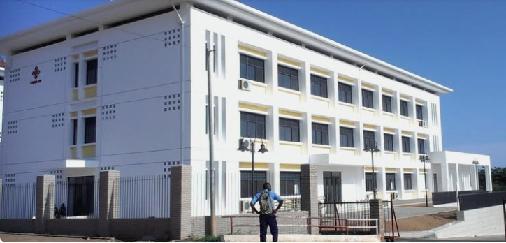
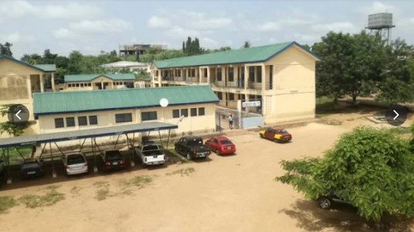
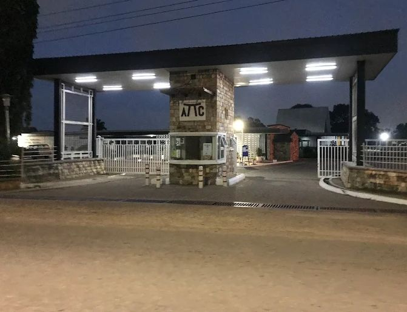
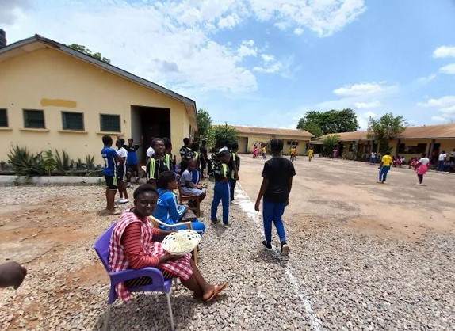

Number of schools: 70
New Century Technical Institute, Dansoman
Ada Technical Institute, Ada
Accra Tech. Trg. Centre, Kokomlemle
Madina Technical Institute, Madina
Pilot Technical Institute, Kokomlemle
Tema Tech. Inst., Tema
Tema Mission Technical Institute, Tema
East Legon Applied Technology Institute
Sacred Heart Tech. Inst., James Town
Afienya Technical Institute, Afienya
Government Technical Institute, Kaneshie
Ashiaman Technical Institute, Ashaiman
Opportunities Industrialization Tech. Inst., East Legon
Kanda Technical Institute, Kanda
Bedeku Technical Institute, Bedeku
Ngleshie Amanfro Technical Institute
Teshie Tech. Instittute, Teshie
Prampram Technical Institute, Prampram
South Labone Girls Technical Institute
Agomeda Technical Institute, Agomeda
Dodowa Technical Institute, Dodowa
Danfa Technical Institute, Danfa
Nima Technical Institute, Nima
Accra Academy, Kaneshie
Accra Girls Senior High, Maamobi
Achimota Senior High, Achimota
St. Mary's Senior High, Korle Gonno
St. Thomas Aquinas Senior High, Cantoments
Presby Boys' Senior High, Legon
Tema Senior High, Tema Comm. 5
Accra Senior High
St. Margaret Mary Snr.High/Tech
Wesley Grammar School
Ada Senior High, Ada - Foah
Accra STEM Academy
Odorgonno Senior High
St. John's Grammar Senior High
Labone Senior High
Forces Senior High/Tech, Burma Camp
West Africa Senior High
Nungua Senior High
Ningo Senior High
Prampram Senior High
Ghanata Senior High
Chemu Senior High/Tech
Our Lady of Mercy Senior High
Ebenezer Senior High
Accra Wesley Girls High
Presby Senior High, Osu
Holy Trinity Senior High
Kaneshie Senior High/Tech.
Kinbu Senior High/Tech
Ada Senior High/Tech.
Frafraha Comm. Senior High
Ashiaman Senior High
Kwabenya Comm. Senior High
Christian Methodist Senior High
Ngleshie Amanfro Senior High
Amasaman Senior High/Tech
Adjen Kotoku Senior High
Akramaman Senior High
Kpone Comm. Senior High
La Presby Senior High
Presby Senior High, Teshie
O'Reilly Senior High
Osudoku Senior High/Tech.
Tema Meth. Day Senior High
Presby Senior High, Tema
Lashibi Comm. Day
Tema Manhean Senior High/Tech